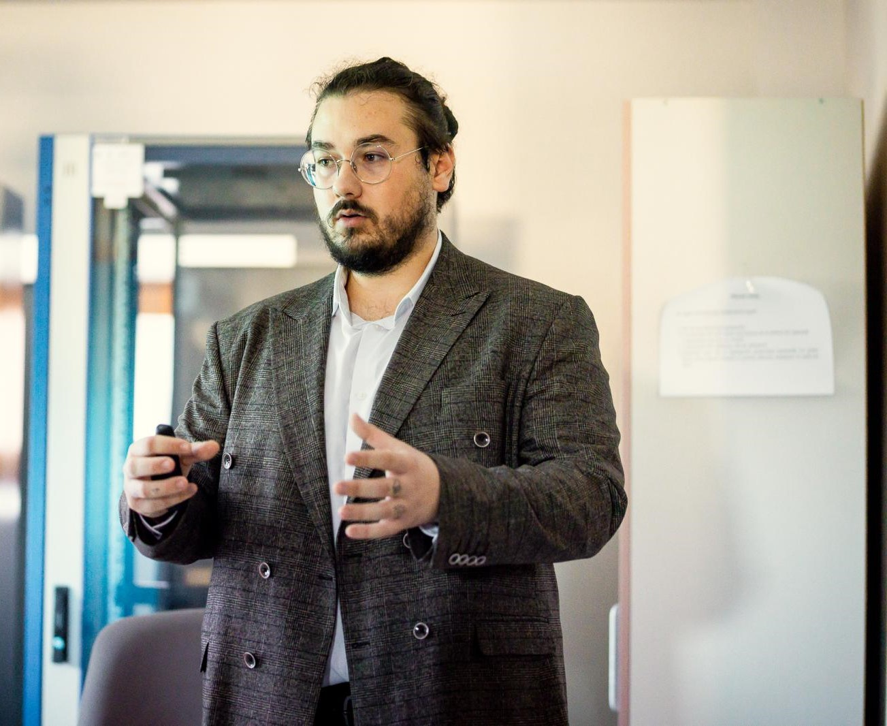

Causal inference for AI in education
My doctoral project at Lucian Blaga University of Sibiu develops causal-inference models to evaluate how AI tools affect equity and personalisation in education.
I build software, read novels with computers, and audit how Romanian small businesses go digital.
Applications I have designed and built, from research tooling to role-based platforms, plus the small projects I learned on.
A doctorate on how AI affects education, and computational studies of vampire fiction.
My doctoral project at Lucian Blaga University of Sibiu develops causal-inference models to evaluate how AI tools affect equity and personalisation in education.
A growing public archive of distant readings of undead literature. For each work we publish an interactive character network and vocabulary profiles, built with our own open-source pipeline and checked by hand.
Dracula Inverted: A Computational Analysis of the First Romanian Vampire Novel
Leveraging Emerging Technologies in Educational Institution Management: Digital Transformation Challenges and Opportunities
The Party Runs on Blood: Distant Reading Romania’s Communist Past in a Postcommunist Vampire Novel
A Computational Comparison of Dracula and Vampirul, the First Romanian Vampire Novel
Umanitatea Digitalului: Securitatea Cibernetică în Moștenirea Noastră Digitală și Conectivitatea ca un Drept Fundamental
Umanitatea Digitalului în Era Web 3.0, IoT și Big Data
Independent verification of digital maturity for companies that receive EU-funded digitalisation grants.
Romanian SMEs that receive digitalisation funding through the National Recovery and Resilience Plan (Component 9, Investment 3) or the Centru Regional Programme 2021–2027 must show which indicators of the EU Digital Intensity Index they meet. I examine their systems and issue the audit report that certifies it, covering ERP and accounting software, cloud productivity suites, online sales, cybersecurity tooling and connected devices.
I write technical and awareness articles for SecurityPatch, a Romanian-language cybersecurity publication, and speak at cybersecurity events about the risks and social effects of new technologies.
Based in Sibiu, Romania.

I work across three fields that rarely share a desk. By day I’m a software developer at NTT DATA, working in Natural and Java. Beyond that I build web applications end to end, most often in Angular and TypeScript, and I mentor student interns through their first real projects.
As a PhD candidate in Cybernetics and Statistics at Lucian Blaga University of Sibiu, I study how AI affects equity and personalisation in education. With Anca-Simina Martin I co-founded Undead Networks, where the pipelines I write extract who speaks to whom in vampire novels, and the reading starts from there.
As an auditor I check that public money for digitalisation buys what it was meant to buy.
Outside work I volunteer with Casa Bună.
For development work, research collaboration or an audit, email is the quickest way to reach me.